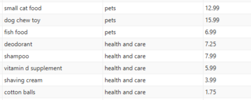
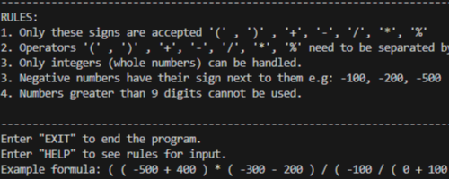

Blog
Recent projects
Filters
Today
10/10/2024
10:20:35 PM
Beautiful day, isn't it?
What will you choose to do with it?
This webpage
10/13/2024
My most recent project is this webpage, I already had experience building my own website but this one looks better and it took me less time, so that is an improvement. The other site I made was my previous portfolio website, which I hosted in github pages. I'm happy that I was able to build this website without having to follow a tutorial, yay!
A few websearches and looking at other websites was enough. Let this be proof of my progress.
Python coin counter
9/26/2024
The project that I was working on before starting was a program that counted the coins in a picture using OpenCV. The problem that I ran into was that the program I made was only able to count the coins based on their size and shape. It would only count circles but the program did not recognize them as coins. It would count all circles in the picture based on their size. Turns out that some coins have the same size but different value.
After trying to fix it, I was not able to make it work the way I wanted to. Turns out that training an AI is not as easy as it seeems and it requires previous knowledge on Tensorflow. I might go back to it later but for now I decided to move on from the project.
Article date check
9/15/2024

I made this project as a part of a technical test for a job application. The program consists in checking if the first 100 aticles of Hacker News were in sorted order using a library for web automation called Playwright by Microsoft within Java script.
The task was simple so i decided to add functionality such as choosing the amount of articles to be read and showing which ones are not in sorted order.
Database GUI
9/4/2024
This project I made using java, JDBC, JavaFX and a few other libraries. It is also the most complex project I have made for now, making use of several different libraries as well as linking the program to a postgrSQL database and making a user interface to facilitate access to the database without allowing the user to see the inner workings of the program itself. My mistake was making a program that was not useful, making a solution to a problem that does not exist is not the best way to go about programming.
In the end, I learned a about database connection pools, prepared statements, sql statements, fxml files, and java in general so my time did not go to waste entirely. But I would like to focus on things that have more practical value as opposed to making projects for the sake of making them. It is just so difficult to know what to do next whenever I finish a project.
Retro Game
8/13/2024

A game made with an optical illusion, from 2D to 3D Ã la Wolfenstein 3D from last century. Using C++ and the power of math to cast rays in a 2D plane and obtain data to create a "fake" 3D game. The game was created along with SDL2 to process the inputs and openGL to handle the creation of a window, but the graphics themselves were made in a similar fashion to some of the first fps games that were created.
The "game" is just a tech demo, it does not contain any gameplay, only features such as opening doors and moving around in an empty map.
Infix to postfix calculator
12/10/2023
Calculator that uses the postfix notation to process data. Postfix notation is a more efficient way to handle large quantities of opererations. The calculator converts the infix notation (Human notation) into a more machine friendly notation with the use of a doubly linked list.
Preprocessing the information and storing it in memory adds a little overhead but it makes up in efficiency when handling computation intensive tasks. Specially when processing massive amounts of data. Function overhead is no more!